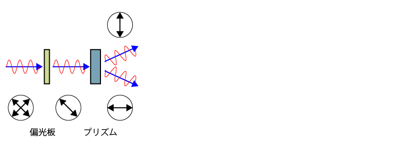
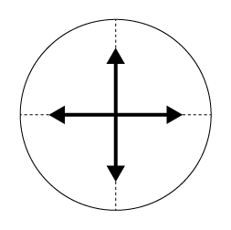
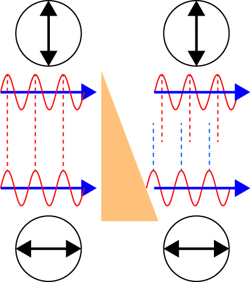

微分干渉顕微鏡の原理-02
さて，二つに分かれた光は，一点から出た光，と近似していいので，焦点距離にプリズムがあるようにレンズを置くと，平行光となります．
その平行光をまたレンズを通すことによって，一点に集光することとなります．
その位置に，新たなプリズムを置くと分かれた光が合成されます．


この際に，重要な点は，二つに分かれた光はそれぞれ同じ道筋を通るので，最終的に合成する際には，
位相は同じ
となります．
位相が同じは形を合成するので，波形は元通りとなります．
ここで，もし，このレンズの間に，
屈折率が異なる物質
厚みが均一でない物質
があった場合，どうなるでしょう？
二つの光の通る位置が異なるので，
異なる厚みを通る
こととなり，結果として，
波形の位相が異なる
こととなります．

さて，位相が異なるとどうなるのでしょう？